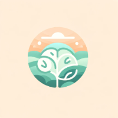
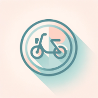
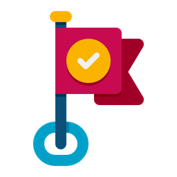
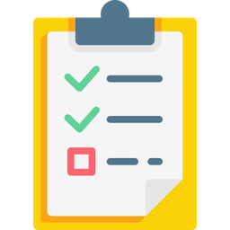
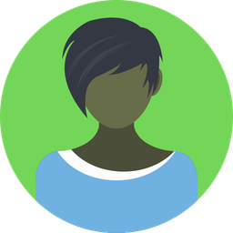
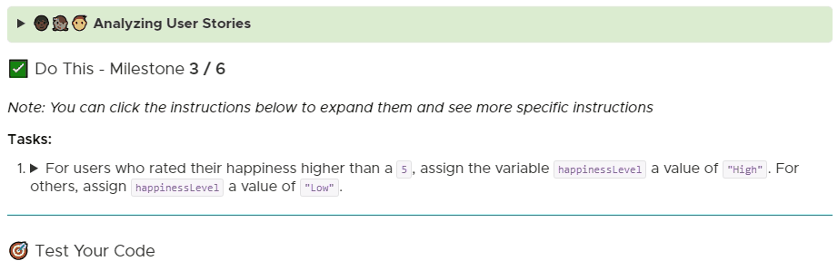

Today you will follow the App Development Process to build a real app, one milestone at a time, using the conditionals you learned in 4.6.
Today you will practice programming with many of the concepts and patterns we explored over the last two lessons.
You will choose one of three apps to help develop. The design of each app is already complete. Your job is to use what you know about conditional statements to make the app function as intended.
Whichever app you choose, choose that same app on every choice level. Each app has four levels in total.
In our next lesson, you will use many of these skills on an independent project, so today’s levels are good practice for what you will find there.
Today you will use the App Development Process to build one of these apps. All three practice the same skills, so pick the one that interests you most.

MindEase
VeloCityDevelopers do not start by writing code. They start by learning what users need, then break that work into small pieces to build and test.
What do users need?

Which features meet those needs?

What code builds each feature?
Does the code work as intended?
You are not the only person who will use your app, so you cannot just guess what it should do. A user story records a real need in the user’s own words. It tells you which features are worth building and when a feature is done.
A user story describes what someone needs or wants from the app, written from the perspective of a person who might use it. One app has many users, and each one can have their own stories.

“I would like to be able to save my favorite items.”
Each user story becomes a milestone in developing the app. A milestone describes one feature to build so that the app meets that user’s need.
“I would like to be able to save my favorite items.”
Create the ability to save favorite items within the app.
To accomplish a milestone, we complete tasks. Each level in today’s lesson focuses on a single milestone and the tasks needed to accomplish it.
Create the ability to save favorite items within the app.
1. Make a favorite button.
2. Save data into a variable when the user clicks the button.
A MindEase user says, “I want the app to tell me whether my mood today is high or low.” Is this a user story, a milestone, a task, or a test?
The milestone is “Show the user whether their happiness level is High or Low.” Which choice is a task for that milestone?
Each level you complete also completes a milestone in your app. Approach every level the same way.
Open the green user story accordion to understand what the user needs.
Complete the tasks. Each level has one to three tasks that achieve the milestone.
Run the tests for the level to make sure your code works as intended.
Each level keeps its important information and hints folded up in accordion tabs. Look for the triangle icon ▶ and click it to reveal what is inside.

2Choose one app: MindEase, VeloCity, or Tix Finder. Choose the same app on all four levels.
3Work through the levels in order. In each one, read the user story, build the tasks, and test your code before moving on.
4If a test fails, re-read the user story and open the task accordions for hints.
Pick one milestone you completed today. What was the user story behind it, and what conditional did you write to accomplish it?